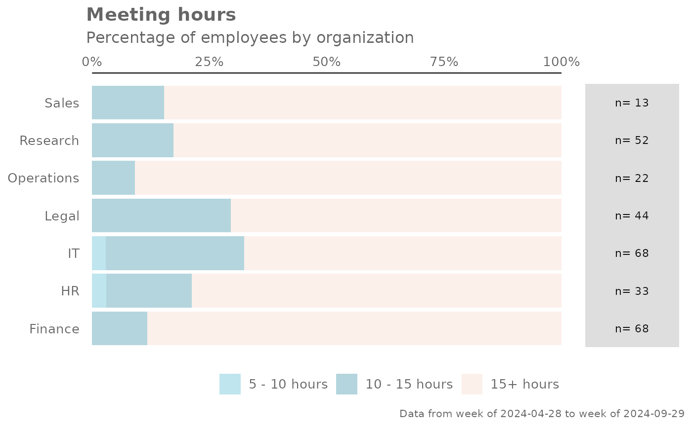
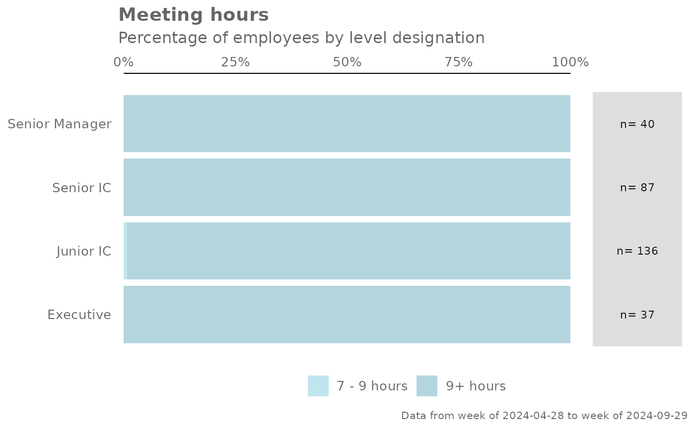

Analyze Meeting Hours distribution. Returns a stacked bar plot by default. Additional options available to return a table with distribution elements.
Usage
meeting_dist(
data,
hrvar = "Organization",
mingroup = 5,
return = "plot",
cut = c(5, 10, 15)
)Arguments
- data
A Standard Person Query dataset in the form of a data frame.
- hrvar
String containing the name of the HR Variable by which to split metrics. Defaults to
"Organization". To run the analysis on the total instead of splitting by an HR attribute, supplyNULL(without quotes).- mingroup
Numeric value setting the privacy threshold / minimum group size. Defaults to 5.
- return
String specifying what to return. This must be one of the following strings:
"plot""table"
See
Valuefor more information.- cut
A numeric vector of length three to specify the breaks for the distribution, e.g. c(10, 15, 20)
Value
A different output is returned depending on the value passed to the return argument:
"plot": 'ggplot' object. A stacked bar plot for the metric."table": data frame. A summary table for the metric.
See also
Other Visualization:
afterhours_dist(),
afterhours_fizz(),
afterhours_line(),
afterhours_rank(),
afterhours_summary(),
afterhours_trend(),
collaboration_area(),
collaboration_dist(),
collaboration_fizz(),
collaboration_line(),
collaboration_rank(),
collaboration_sum(),
collaboration_trend(),
create_bar(),
create_bar_asis(),
create_boxplot(),
create_bubble(),
create_dist(),
create_fizz(),
create_inc(),
create_line(),
create_line_asis(),
create_period_scatter(),
create_rank(),
create_sankey(),
create_scatter(),
create_stacked(),
create_tracking(),
create_trend(),
email_dist(),
email_fizz(),
email_line(),
email_rank(),
email_summary(),
email_trend(),
external_dist(),
external_fizz(),
external_line(),
external_rank(),
external_sum(),
hr_trend(),
hrvar_count(),
hrvar_trend(),
keymetrics_scan(),
meeting_fizz(),
meeting_line(),
meeting_rank(),
meeting_summary(),
meeting_trend(),
one2one_dist(),
one2one_fizz(),
one2one_freq(),
one2one_line(),
one2one_rank(),
one2one_sum(),
one2one_trend()
Other Meetings:
meeting_fizz(),
meeting_line(),
meeting_rank(),
meeting_summary(),
meeting_tm_report(),
meeting_trend()
Examples
# Return plot
meeting_dist(pq_data, hrvar = "Organization")

# Return summary table
meeting_dist(pq_data, hrvar = "Organization", return = "table")
#> # A tibble: 7 × 5
#> group `5 - 10 hours` `10 - 15 hours` `15+ hours` Employee_Count
#> <fct> <dbl> <dbl> <dbl> <int>
#> 1 Finance NA 0.118 0.882 68
#> 2 HR 0.0303 0.182 0.788 33
#> 3 IT 0.0294 0.294 0.676 68
#> 4 Legal NA 0.295 0.705 44
#> 5 Operations NA 0.0909 0.909 22
#> 6 Research NA 0.173 0.827 52
#> 7 Sales NA 0.154 0.846 13
# Return result with a custom specified breaks
meeting_dist(pq_data, hrvar = "LevelDesignation", cut = c(4, 7, 9))
